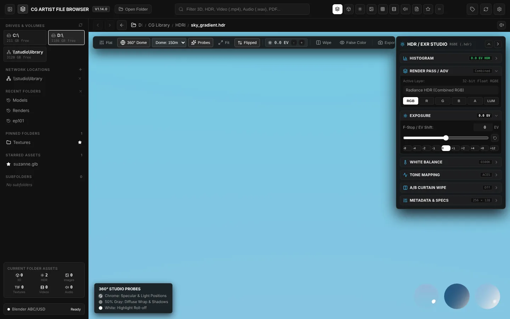

Deep dive
HDR and EXR maps
The 360° inspector for HDR and EXR environment maps: exposure, tone mapping, channels, the eyedropper and probes.
Opening a map
.hdr and .exr files open in the HDR and EXR inspector. The map appears as a 360° sky that you can look around in. Use the flat view button in the toolbar to see the whole equirectangular image at once. The app reads 32-bit float values, so bright sun pixels keep their real brightness until you tone-map them.

Exposure and tone mapping
- Exposure runs from −10 to +10 EV. Hold
Eand drag left or right, or use the slider.0resets it, and whileEis held+and-step by half a stop. - Tone mapping decides how the bright values are squeezed onto the screen. The list includes ACES, AgX, Cineon, Linear and Reinhard. Linear shows the raw values, which is the honest choice for checking light levels.
Channels
Press 1 to 6 to solo a channel, such as red, green, blue, alpha or luminance, and C to cycle. A channel that is all black or all white tells you a lot about a pass before you look at the image.
Eyedropper and probes
Hover over the map to read the linear RGB value of a pixel, the hex colour and the luminance. Click to pin the reading. Press P to show or hide the probes, the small markers that show where you sampled.
Other controls
Zand drag zooms the view.0resets the zoom andFfits the view.Vflips the image vertically, which helps when a map comes from a tool with the other convention.Wturns the wipe on and off, to compare the map with another one.- The panel lists the metadata of the file, the render passes (AOVs) inside an EXR, and the highlight roll-off setting.
Found a mistake or something missing? Edit this page on GitHub.